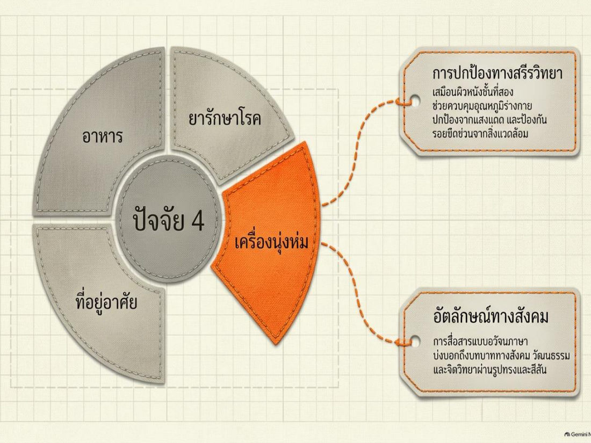
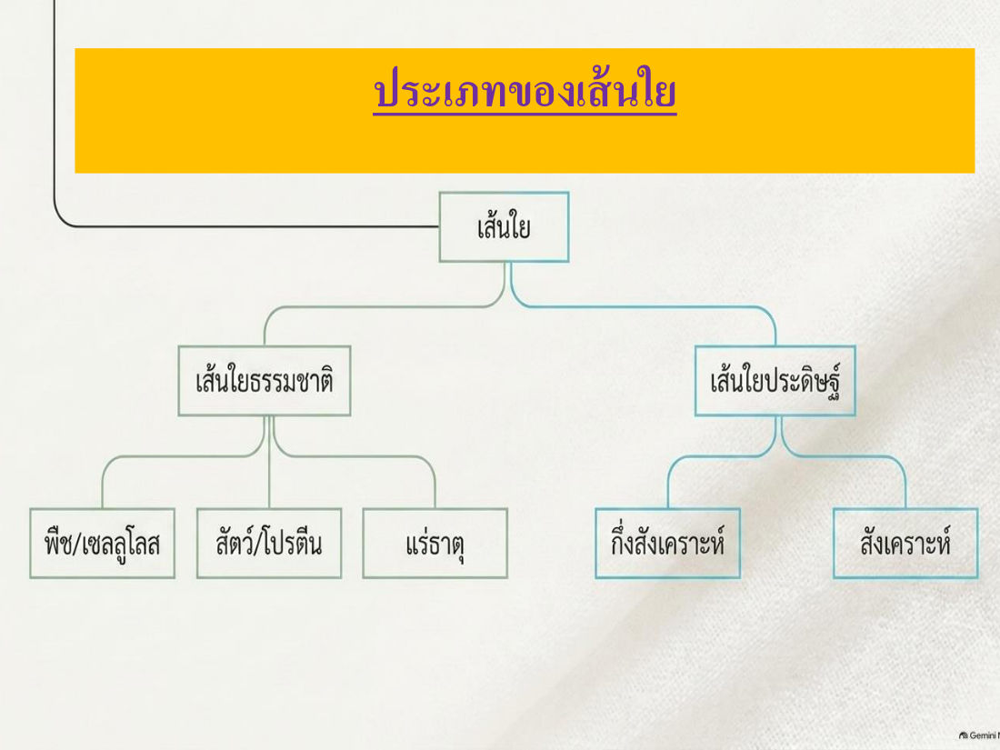
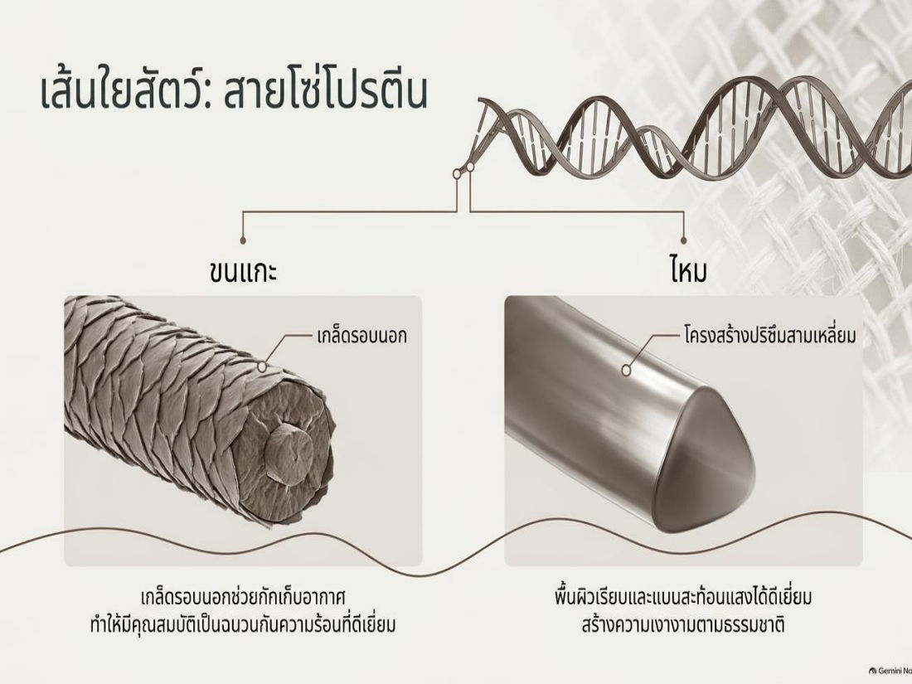
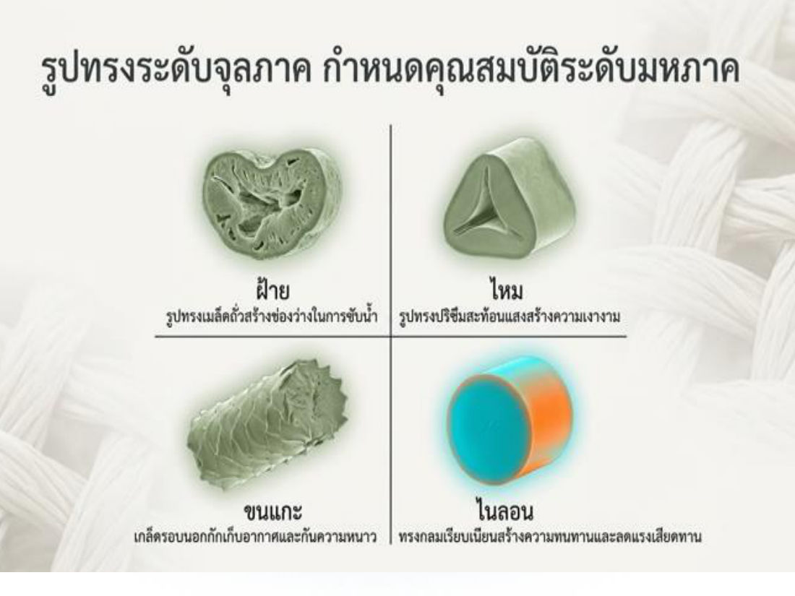
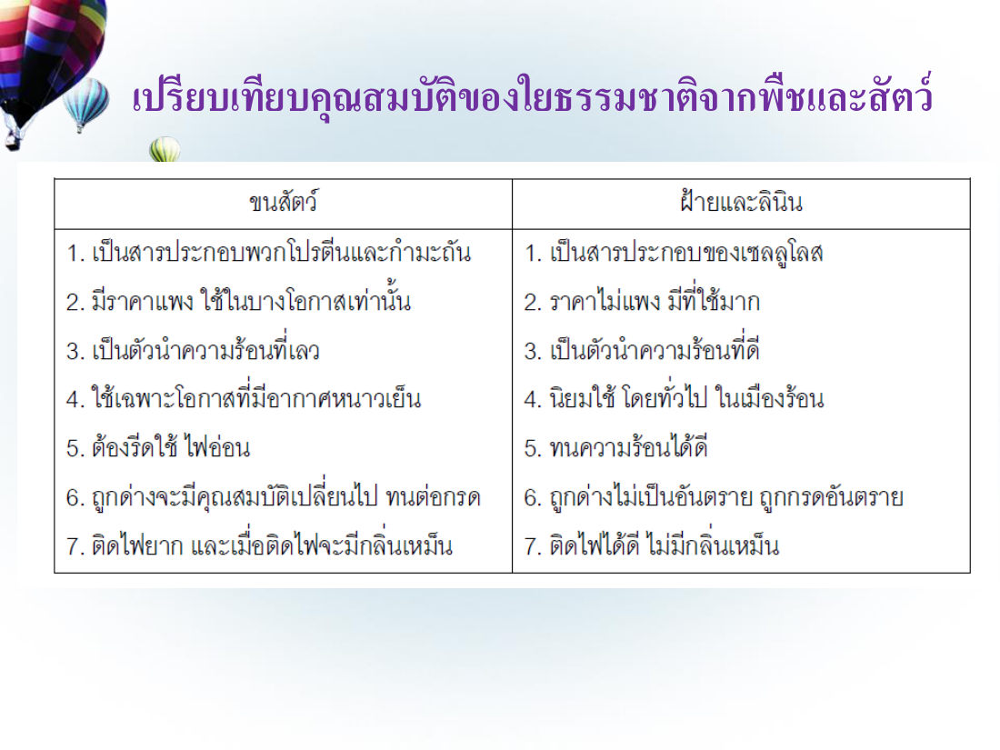
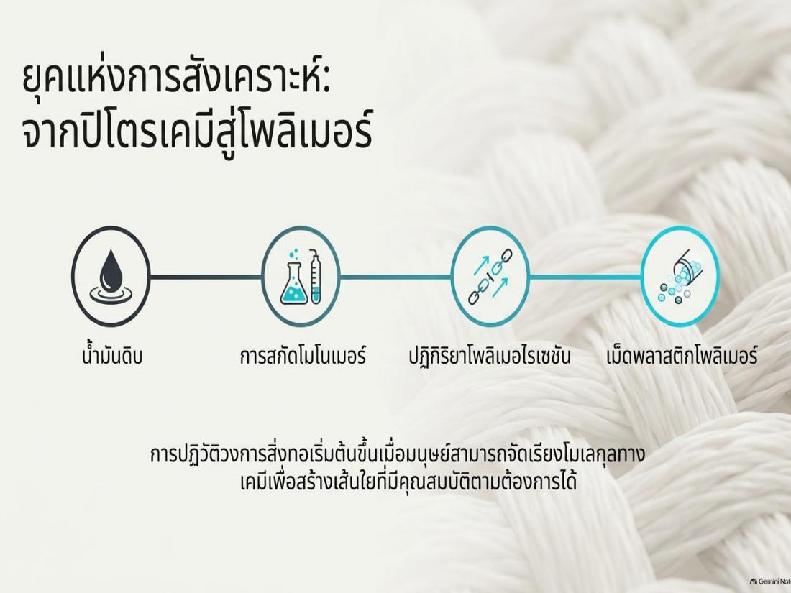
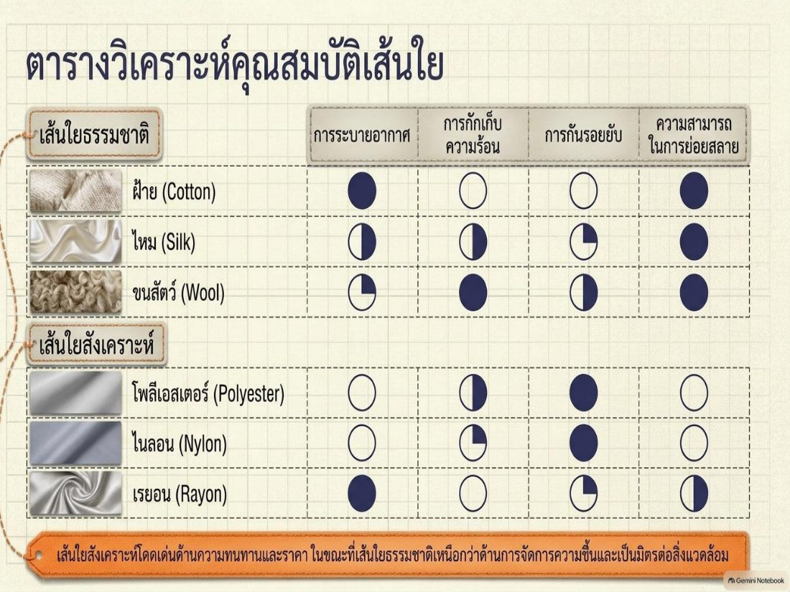
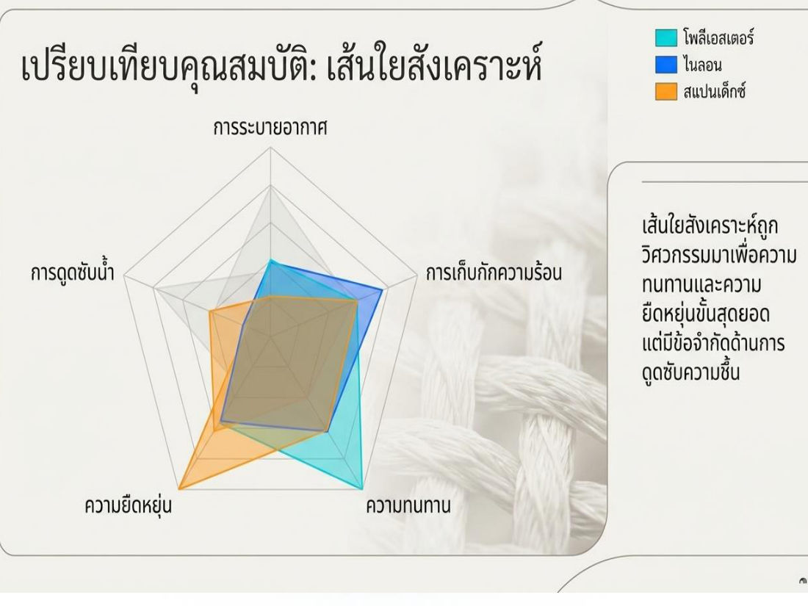
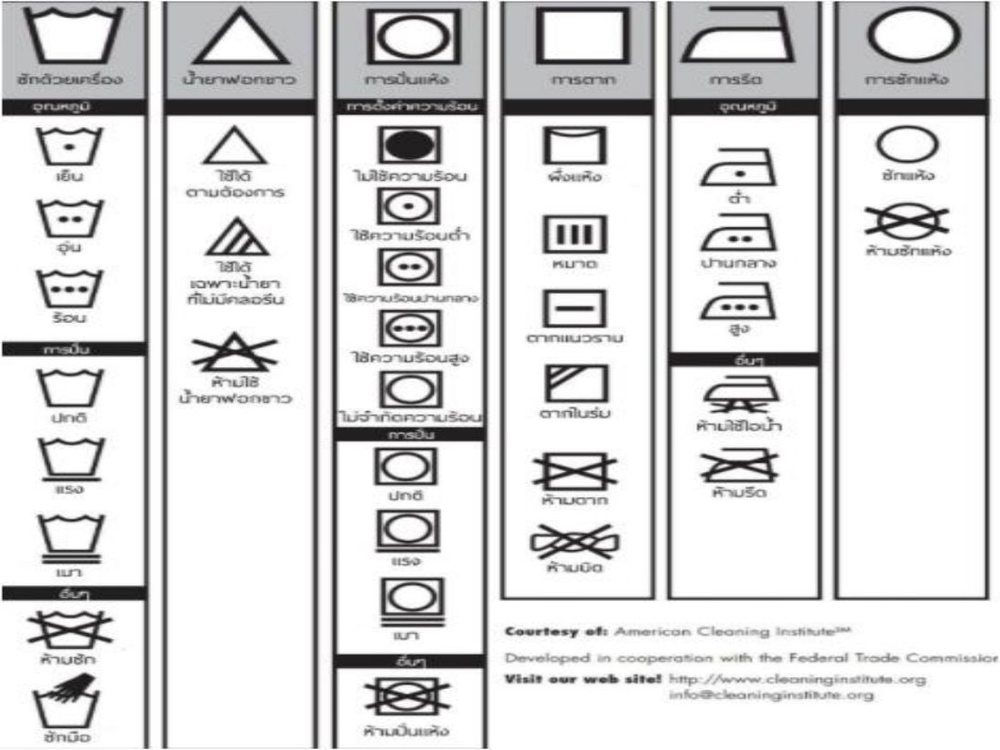

เครื่องนุ่งห่มเป็น 1 ในปัจจัย 4 บทนี้เรียนตั้งแต่หน่วยเล็กสุด "เส้นใย" → เส้นด้าย → ผ้า แบ่งเส้นใยธรรมชาติ (พืช/สัตว์/แร่) กับเส้นใยประดิษฐ์ (กึ่งสังเคราะห์/สังเคราะห์) กระบวนการผลิต นวัตกรรมเสื้อผ้า 4 กลุ่ม และการเลือกซื้อ/ดูแลรักษา (สัญลักษณ์ป้ายผ้า)
ในข้อสอบฝึก บทนี้ออก 18 ข้อ (ข้อ 37–54) เน้น: นิยาม 4 คำ, ตัวอย่างเส้นใยแต่ละกลุ่ม, เรยอน, Vicara/Ardil, fiber spinning 3 แบบ, เสื้อนาโน, เสื้อคุมเบาหวาน, สัญลักษณ์ป้ายผ้า
1. ความหมายและความสำคัญของเครื่องนุ่งห่ม
- อดีต: ใช้วัสดุธรรมชาติ เช่น ใบไม้ ปกปิดร่างกาย ให้ความอบอุ่น · เขตหนาวใช้ขนสัตว์ทำเสื้อ
- ปัจจุบัน: นอกจากปกปิด/ห่อหุ้มร่างกาย ยังบ่งบอก วัฒนธรรม ฐานะ เชื้อชาติ
- เครื่องนุ่งห่มประกอบด้วยเส้นใย 2 ประเภท: ธรรมชาติ และ สังเคราะห์
ความหมาย: เสื้อผ้าเครื่องแต่งกาย พัฒนาจากหน่วยเล็กสุดคือ เส้นใย → ถัก/ทอเป็นผืนผ้า → ตกแต่ง พิมพ์ลาย → ผลิตภัณฑ์สิ่งทอ ซึ่งรวมถึง สิ่งทอในบ้าน (ผ้าห่ม ผ้าปูที่นอน ปลอกหมอน ผ้าม่าน) และ สิ่งทอในอุตสาหกรรม
บทบาทในปัจจัย 4: (1) การปกป้องทางสรีรวิทยา — เหมือน "ผิวหนังชั้นที่สอง" ควบคุมอุณหภูมิ กันแดด กันรอยขีดข่วน (2) อัตลักษณ์ทางสังคม — สื่อสารแบบอวัจนภาษา บอกบทบาทสังคม วัฒนธรรม จิตวิทยา ผ่านรูปทรงและสีสัน

2. ความหมายของศัพท์ที่เกี่ยวข้อง ⭐
| คำ | ความหมาย |
|---|---|
| เส้นใย (Fiber) | ต้นกำเนิดของสิ่งทอ เป็นเส้นเล็ก ยาว มีทั้งธรรมชาติและมนุษย์ประดิษฐ์ ใช้ ปั่นและเข้าเกลียวเป็นเส้นด้าย เพื่อผลิตผืนผ้า |
| เส้นด้าย (Yarn) | การนำ เส้นใยหลาย ๆ เส้นมารวมกันแล้วบิดหรือเข้าเกลียว หรือนำเส้นใยมาเรียงและต่อกัน |
| สิ่งทอ (Textiles) | สิ่งทอหรือผลิตภัณฑ์สิ่งทอ ทุกชนิดที่ผลิตจากเส้นใย ทั้งวิธีทอและไม่ทอ |
| ผ้า (Fabric) | สิ่งทอที่เป็น ผืน มีความกว้าง ยาว หนา ต่างกันตามกรรมวิธีผลิต |
💡 ลำดับ: Fiber → Yarn → Fabric (ทั้งหมดอยู่ในร่ม "Textiles")
3. ประเภทของเส้นใย

- เส้นใยธรรมชาติ → จาก พืช (เซลลูโลส) / สัตว์ (โปรตีน) / แร่ธาตุ
- เส้นใยประดิษฐ์ → กึ่งสังเคราะห์ (ประดิษฐ์จากวัตถุธรรมชาติ เช่น เรยอน) / สังเคราะห์ (จากสารเคมี) / จากวัสดุอื่น ๆ
ธรรมชาติ vs สังเคราะห์ (infographic)
- ใยสังเคราะห์ — มนุษย์สร้างขึ้นเอง ปรับปรุงคุณสมบัติตามการใช้งาน มีความเงา ยืดหยุ่น ทนทาน แห้งง่าย
- ใยธรรมชาติ — ได้จากพืชและสัตว์ (จากพืชราคาถูกกว่าจากสัตว์ มีมากกว่า นิยมในบ้านเราเพราะหาง่าย) เช่น ฝ้าย ลินิน ป่าน ปอ ใยไผ่
- ใยป่าน ทนต่อการซักรีด เงา แห้งเร็ว · ใยไผ่ ดีต่อสุขภาพ ต้านแบคทีเรีย ลดกลิ่นอับ ยืดหยุ่น ระบายอากาศ ซับเหงื่อ เบา · ใยฝ้าย (Cotton) ราคาถูก ทนทาน เรียบเป็นเงา ดูดซับน้ำดี · ใยลินิน ระบายอากาศดีมาก ซับเหงื่อดี แต่ยับง่าย
4. เส้นใยธรรมชาติ
4.1 เส้นใยเซลลูโลสจากพืช ⭐
| กลุ่ม | ชื่อภาษาอังกฤษ | ตัวอย่าง |
|---|---|---|
| เส้นใยที่ หุ้มเมล็ด | Surface fibers | ฝ้าย |
| เส้นใยจาก เปลือกไม้ | Soft fibers | ลินิน ปอ กัญชา |
| เส้นใยจาก ใบ | Hard fibers | สับปะรด ป่านศรนารายณ์ กล้วย ย่านลิเภา |
💡 จำ: เมล็ด = Surface (ผิวเมล็ด) · เปลือก = Soft · ใบ = Hard
คุณสมบัติเด่นในสไลด์: ฝ้าย นุ่ม ดูดซับความชื้นดี · ลินิน แข็งแรง ระบายความร้อนเยี่ยม · กัญชง ทนรังสียูวีและแบคทีเรีย
4.2 เส้นใยจากสัตว์ (โปรตีน)
- ตัวอย่าง: ขนแกะ และ ใยจากรังไหม
- สมบัติคล้ายโปรตีนอื่น: เปียกน้ำแล้วความเหนียวและความแข็งแรงลดลง · ถูกแดดนาน ๆ จะ สลายหรือกรอบ
- ขนแกะ มี เกล็ดรอบนอก กักเก็บอากาศ → เป็นฉนวนกันความร้อน/กันหนาวดีเยี่ยม
- ไหม โครงสร้าง ปริซึมสามเหลี่ยม ผิวเรียบ สะท้อนแสง → เงางามตามธรรมชาติ

รูปทรงระดับจุลภาค กำหนดคุณสมบัติระดับมหภาค: ฝ้าย = รูปเมล็ดถั่ว มีช่องว่างซับน้ำ · ไหม = ปริซึม สะท้อนแสงเงางาม · ขนแกะ = เกล็ดกักอากาศ กันหนาว · ไนลอน = ทรงกลมเรียบ ทนทาน ลดแรงเสียดทาน

4.3 กระบวนการผลิตเส้นใยขนสัตว์ (Wool)
- นำขนที่ ตัด/เล็ม มา แบ่งเกรดตามคุณภาพ ← ขั้นแรก
- ผสมขนเกรดเดียวกันให้ทั่ว
- ทำความสะอาดคราบไขมันและสิ่งสกปรกด้วยสบู่
- สางเส้นใย
- ปั่นเป็นเส้นด้าย (ฟู หนา นุ่ม)
- ทอเป็นผืนผ้า และตกแต่งสำเร็จ
4.4 เปรียบเทียบใยธรรมชาติจากพืชและสัตว์
| ขนสัตว์ | ฝ้ายและลินิน |
|---|---|
| โปรตีนและกำมะถัน | เซลลูโลส |
| ราคาแพง ใช้บางโอกาส | ราคาไม่แพง ใช้มาก |
| นำความร้อน เลว | นำความร้อน ดี |
| ใช้ในอากาศหนาวเย็น | นิยมในเมืองร้อน |
| ต้องรีดด้วยไฟอ่อน | ทนความร้อนได้ดี |
| ถูกด่างคุณสมบัติเปลี่ยน ทนต่อกรด | ถูกด่างไม่เป็นอันตราย ถูกกรดอันตราย |
| ติดไฟยาก ติดไฟแล้ว มีกลิ่นเหม็น | ติดไฟได้ดี ไม่มีกลิ่นเหม็น |

5. เส้นใยสังเคราะห์
| ประเภท | รายละเอียด |
|---|---|
| 1. เซลลูโลสสังเคราะห์ (Synthetic Cellulose / Regenerated cellulose) | เรยอน (Rayon) — เดิมรู้จักในชื่อ "ไหมเทียม" (จัดเป็นกึ่งสังเคราะห์) |
| 2. โปรตีนสังเคราะห์ (Synthetic Protein) | โปรตีนจากถั่วเหลือง ถั่วลิสง ข้าวโพด เช่น Vicara จากข้าวโพด, Ardil จากถั่วลิสง |
| 3. โพลิเมอร์สังเคราะห์ (Synthetic Polymer) | ผลิตจากสารเคมี (โพลิเมอร์) เช่น ไนลอน โพลิเอสเตอร์ อะคริลิค โอลิฟิน ส่วนประกอบเคมีต่างกันแต่ขั้นตอนผลิตคล้ายกัน |
💡 จำ: Vicara = ข้าวโพด · Ardil = ถั่วลิสง — ข้อสอบชอบใส่ "ถั่วเหลือง" เป็นตัวลวง (ถั่วเหลืองมีในสไลด์ แต่ไม่ได้ระบุชื่อเส้นใย)
⚠️ ฝ้าย (Cotton) ไม่ใช่ เส้นใยสังเคราะห์
ยุคแห่งการสังเคราะห์: จากปิโตรเคมีสู่โพลิเมอร์ — น้ำมันดิบ → สกัดโมโนเมอร์ → ปฏิกิริยาโพลิเมอไรเซชัน → เม็ดพลาสติกโพลิเมอร์ (การปฏิวัติสิ่งทอเริ่มเมื่อมนุษย์จัดเรียงโมเลกุลเพื่อสร้างเส้นใยตามต้องการได้)

ตารางวิเคราะห์คุณสมบัติเส้นใย (● = ดีมาก, ○ = น้อย)
| เส้นใย | ระบายอากาศ | กักเก็บความร้อน | กันรอยยับ | ย่อยสลายได้ |
|---|---|---|---|---|
| ฝ้าย | ● | ○ | ○ | ● |
| ไหม | ◐ | ◐ | ◔ | ● |
| ขนสัตว์ | ◔ | ● | ◐ | ● |
| โพลีเอสเตอร์ | ○ | ◐ | ● | ○ |
| ไนลอน | ○ | ◔ | ● | ○ |
| เรยอน | ● | ○ | ◔ | ◐ |
สรุปสไลด์: เส้นใยสังเคราะห์โดดเด่นด้านความทนทานและราคา ส่วน เส้นใยธรรมชาติเหนือกว่าด้านการจัดการความชื้นและเป็นมิตรต่อสิ่งแวดล้อม
กราฟเรดาร์ (โพลีเอสเตอร์/ไนลอน/สแปนเด็กซ์): ใยสังเคราะห์ถูกออกแบบให้ ทนทานและยืดหยุ่นสุดยอด แต่มีข้อจำกัดด้านการดูดซับความชื้น (สแปนเด็กซ์ยืดหยุ่นที่สุด โพลีเอสเตอร์ทนทานสูง ไนลอนเก็บกักความร้อนสูง)


6. กระบวนการผลิตเส้นใยประดิษฐ์
แบ่ง 2 ส่วนใหญ่: (1) เตรียมโพลิเมอร์ตั้งต้น และ (2) ขึ้นรูปเป็นเส้นใย
6.1 การเตรียมโพลิเมอร์ตั้งต้น
- จากวัตถุธรรมชาติที่มีโพลิเมอร์อยู่แล้ว (เช่น เรยอน) → ย่อยวัตถุดิบ เช่น ไม้ ด้วยแรงกลและสารเคมี → ทำเป็น สารละลายเข้มข้น (Polymer viscous)
- เส้นใยสังเคราะห์ → สังเคราะห์โพลิเมอร์จาก โมโนเมอร์ แบบ การรวมตัว (addition polymerization) หรือ แบบกลั่น (condensation polymerization) ขึ้นกับชนิดโมโนเมอร์
6.2 การขึ้นรูปเป็นเส้นใย (fiber spinning) — 3 แบบพื้นฐาน ⭐
- ปั่นแห้ง (dry spinning)
- ปั่นเปียก (wet spinning)
- ปั่นหลอม (melt spinning)
⚠️ ไม่มี "ปั่นเย็น (cold spinning)"
ตัวอย่างเส้นใยที่ผลิต: ไนลอน, อะซีเตท, อะคริลิค, พลาสติก, วิสโคสเรยอน, โพลีเอสเตอร์, เส้นใยผสม (Blended Fibers)
7. ผลิตภัณฑ์เครื่องนุ่งห่มที่เป็นนวัตกรรมใหม่ — 4 กลุ่ม
ปัจจุบันนำวิทยาศาสตร์และเทคโนโลยีใหม่มาปรับปรุงเสื้อผ้าให้เหมาะกับการใช้งานที่หลากหลาย
7.1 เครื่องนุ่งห่มเพื่อปกป้องสุขภาพ
ปกป้องและต่อต้านอันตรายจากสภาวะแวดล้อม เช่น กันรังสียูวี กันสัตว์/แมลง
- สิ่งทอกันยุง — นำ สมุนไพร ที่ไล่/ป้องกันยุงมาใช้บนวัสดุสิ่งทอ
- เสื้อนาโน — วัสดุขนาด 1–100 นาโนเมตร
| อนุภาคนาโน | คุณสมบัติ |
|---|---|
| ซิลเวอร์ออกไซด์ (Silver Oxide) | ยับยั้งแบคทีเรีย + ป้องกันรังสี UV |
| ไทเทเนียมไดออกไซด์ (Titanium Dioxide) | ตัวเร่งปฏิกิริยา สลายสารมลพิษ |
| นาโนเคลย์ (Nanoclay) เช่น Montmorillonite | กันการซึมผ่านของแก๊ส |
ตัวอย่างในสไลด์: เสื้อนาโนกันน้ำ (เทน้ำ/น้ำหวานใส่แล้วไม่เปียก)
⚠️ กันแบคทีเรีย+UV = ซิลเวอร์ออกไซด์ (ไม่ใช่ไทเทเนียม — ไทเทเนียม = สลายมลพิษ)
7.2 เครื่องนุ่งห่มที่ปรับตัวตามสภาวะแวดล้อม
ไวต่อการเปลี่ยนแปลง อุณหภูมิ แสง ความชื้น — นักวิทยาศาสตร์อังกฤษคิดค้นผ้าที่ปรับตามอุณหภูมิร่างกาย: ร้อน → "ขน" บนผ้า เปิดอัตโนมัติ ให้อากาศเข้าเย็นลง → เย็นลงแล้ว ปิด อีกครั้ง ตัวอย่าง: เสื้อที่ โดนแดดแล้วตัวอักษรเด่นขึ้น
7.3 เครื่องนุ่งห่มอัจฉริยะ
มี ชิ้นส่วนอิเล็กทรอนิกส์ เช่น เครื่องเล่นมีเดีย เครื่องมือสื่อสาร เครื่องตรวจวัดสุขภาพ
- เสื้อคุมเบาหวานชนิดที่ 2: กลูโคสในเลือด + กลูโคสออกซิเดส (ตรึงบนโพลิเมอร์) → pH ของโพลิเมอร์ลดลง → โพลิเมอร์ พองตัว → ปล่อยยา Anti-Diabetic Herbal Drug เข้ากระแสเลือด
- ตัวอย่างอื่น: แจ็กเก็ตมีพัดลม USB (ปรับอากาศ กันยูวี), Flexwarm แจ็กเก็ตปรับอุณหภูมิให้อุ่นได้ผ่านมือถือ
7.4 เครื่องนุ่งห่มที่เกี่ยวกับการบำรุงผิวพรรณ
เคลือบ สารบำรุงผิว บนสิ่งทอ ให้ผ้าเป็นตัวกลางถ่ายเทสารสู่ผิว เช่น สารสกัด ใบแป๊ะก๊วย, น้ำมันทีทรี, ว่านหางจระเข้, วิตามิน, สารหอม
8. การเลือกซื้อและการดูแลรักษาเสื้อผ้า
การเลือกซื้อขึ้นกับค่านิยม รสนิยม ความเชื่อมั่น บุคลิกภาพ และต้องดูแลให้เหมาะกับชนิดเส้นใย
ข้อควรพิจารณาในการเลือกซื้อ (8 ข้อ)
- ตรวจจำนวนและประเภทเสื้อผ้าที่มีอยู่
- ซื้อเฉพาะที่จำเป็น
- ถูกกาลเทศะ และตามประโยชน์ใช้สอย
- เหมาะกับรูปร่าง สวมใส่สบาย
- ทนทาน ตัดเย็บประณีต
- ดูหลายร้านเพื่อเปรียบเทียบ
- เลือกแบบเรียบ ๆ
- ดูเนื้อผ้า ตลอดจนการซัก รีด และการเก็บรักษา
การดูแลรักษา = ทำให้ผ้าสะอาด คงสภาพเดิมได้นาน ดูใหม่น่าใช้ ขึ้นกับคุณสมบัติเส้นใย เส้นด้าย และโครงสร้างผ้า
สัญลักษณ์บนป้ายดูแลรักษาผ้า ⭐
| สัญลักษณ์ | หมายถึง | รายละเอียด |
|---|---|---|
| อ่างน้ำ | การซัก | จุด 1/2/3 = น้ำเย็น/อุ่น/ร้อน · เส้นใต้ = ปั่นเบา · มือในอ่าง = ซักมือ · อ่างมีกากบาท = ห้ามซัก |
| สามเหลี่ยม | น้ำยาฟอกขาว | ว่าง = ใช้ได้ · มีขีด = เฉพาะที่ไม่มีคลอรีน · กากบาท = ห้ามใช้ |
| สี่เหลี่ยมมีวงกลมใน | การปั่นแห้ง (tumble dry) | จุด = ระดับความร้อน · วงดำ = ไม่ใช้ความร้อน · กากบาท = ห้ามปั่นแห้ง |
| สี่เหลี่ยม | การตาก | โค้งบน = ผึ่ง/แขวน · 3 ขีดตั้ง = หมาด · ขีดนอน = ตากแนวราบ · ขีดเฉียงมุม = ตากในร่ม · กากบาท = ห้ามตาก/ห้ามบิด |
| เตารีด | การรีด | จุด 1/2/3 = ความร้อนต่ำ/ปานกลาง/สูง · กากบาทใต้ = ห้ามใช้ไอน้ำ · กากบาททับ = ห้ามรีด |
| วงกลม | การซักแห้ง | วงกลม = ซักแห้งได้ · วงกลมมีกากบาท = ห้ามซักแห้ง |

คำศัพท์สำคัญ
| คำศัพท์ | ความหมาย | จำง่าย ๆ ว่า |
|---|---|---|
| Fiber | เส้นใย ต้นกำเนิดสิ่งทอ | หน่วยเล็กสุด |
| Yarn | เส้นด้าย เส้นใยหลายเส้นบิดเข้าเกลียว | ด้ายเย็บผ้า |
| Fabric | ผ้าเป็นผืน | ผืน |
| Textiles | ผลิตภัณฑ์จากเส้นใยทุกชนิด ทอและไม่ทอ | คำใหญ่สุด |
| Surface / Soft / Hard fibers | ใยหุ้มเมล็ด / เปลือกไม้ / ใบ | ฝ้าย / ลินิน / สับปะรด |
| Rayon | เซลลูโลสกึ่งสังเคราะห์ | ไหมเทียม |
| Vicara / Ardil | โปรตีนสังเคราะห์จากข้าวโพด / ถั่วลิสง | |
| Fiber spinning | ขึ้นรูปเส้นใย: dry / wet / melt | แห้ง เปียก หลอม |
| Glucose oxidase | เอนไซม์ในเสื้อคุมเบาหวาน | pH ลด → พอง → ปล่อยยา |
สรุปท้ายบท / จุดที่มักออกสอบ
- นิยาม 4 คำ: Fiber = ต้นกำเนิด ปั่นเป็นด้าย · Yarn = รวมหลายเส้นบิดเกลียว · Textiles = ทุกอย่างจากเส้นใย ทอและไม่ทอ · Fabric = ผืน กว้าง ยาว หนา
- พืช: ฝ้าย (หุ้มเมล็ด) · ลินิน ปอ กัญชา (เปลือก) · สับปะรด ป่านศรนารายณ์ กล้วย ย่านลิเภา (ใบ)
- สัตว์ (โปรตีน): ขนแกะ ไหม — เปียกแล้วอ่อนแอลง แดดนาน ๆ กรอบ
- สังเคราะห์: เรยอน = ไหมเทียม · Vicara = ข้าวโพด · Ardil = ถั่วลิสง · ไนลอน โพลิเอสเตอร์ อะคริลิค โอลิฟิน
- Wool ขั้นแรก: แบ่งเกรดตามคุณภาพ
- Spinning 3 แบบ: dry / wet / melt
- นาโน: Silver oxide = ต้านแบคทีเรีย+UV · TiO₂ = สลายมลพิษ · Nanoclay = กันแก๊ส
- เสื้อเบาหวาน: กลูโคสออกซิเดส
- ป้ายผ้า: เตารีด = รีด (จุด = อุณหภูมิ) · วงกลม = ซักแห้ง · วงกลม+X = ห้ามซักแห้ง